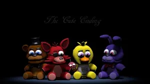
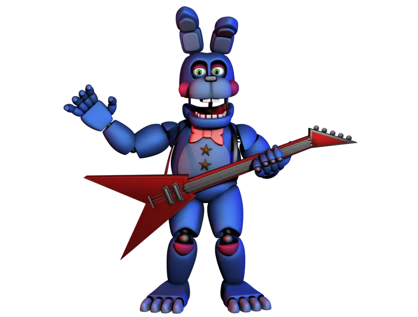
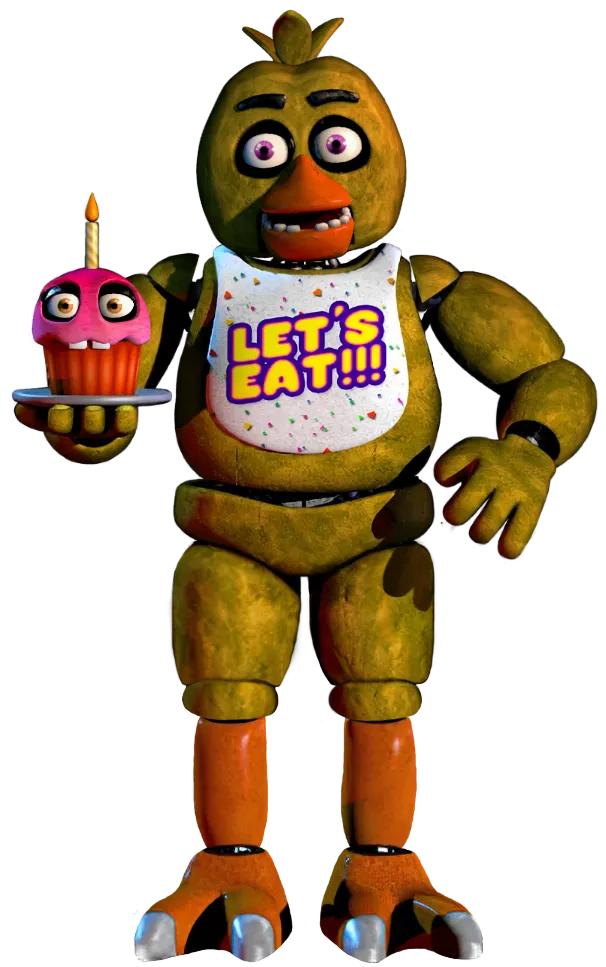
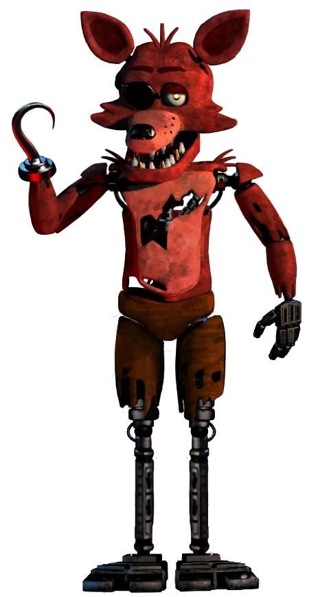
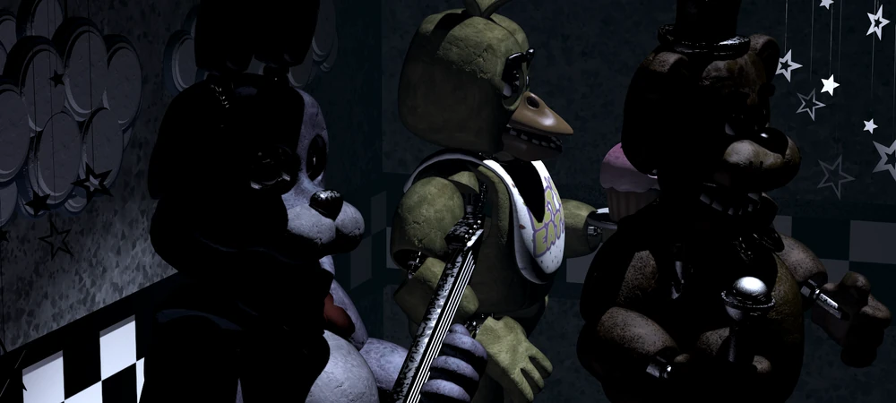
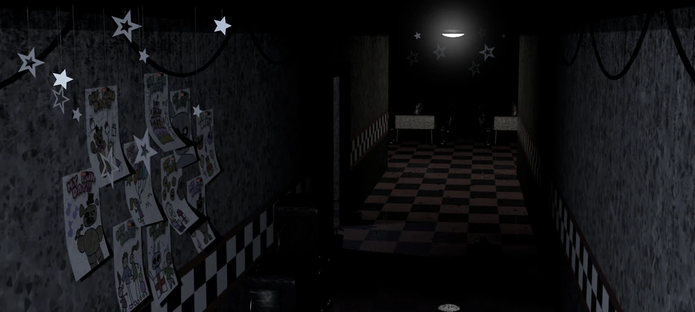
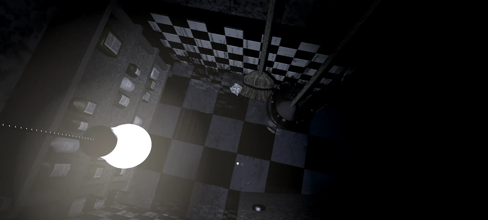
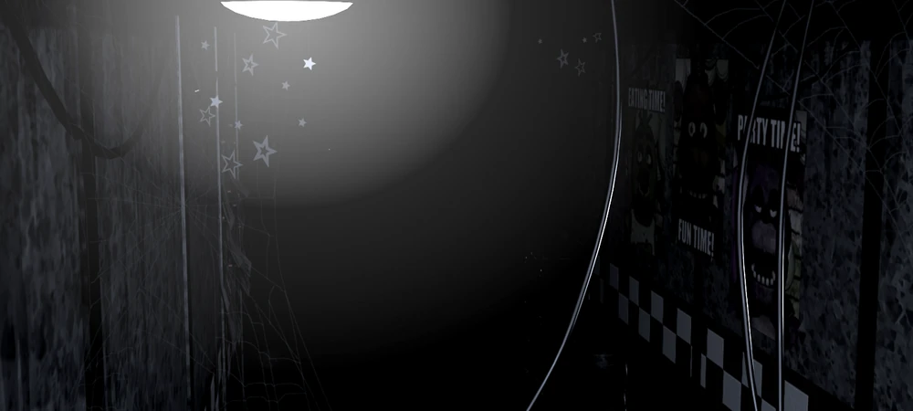
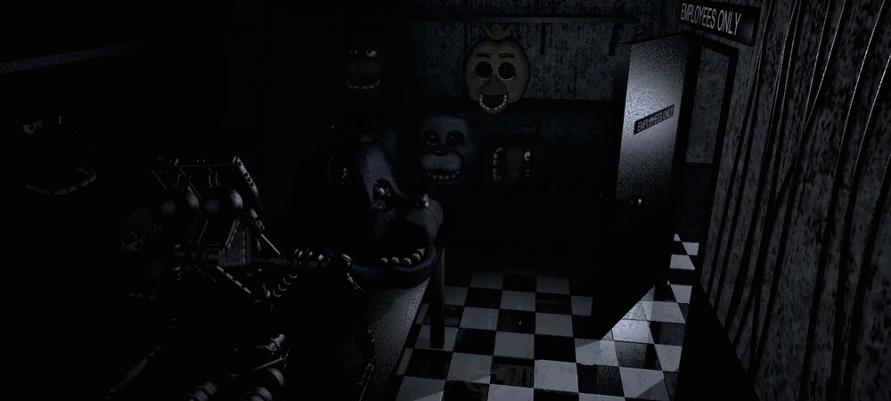

Monitoreo nocturno activo • Turno nocturno

Freddy Fazbear's Pizza era un restaurante muy popular donde las familias podían comer y ver espectáculos animatrónicos.
Durante el día los robots cantaban y entretenían a los niños, pero durante la noche comenzaban a moverse por el restaurante.
Con el tiempo ocurrieron incidentes extraños dentro del lugar y algunas personas comenzaron a decir que los animatrónicos no se comportaban de forma normal.
La mascota principal del restaurante.

Un conejo animatrónico que toca la guitarra.

Animatrónico con forma de gallina.

Un pirata animatrónico que vive en Pirate Cove.
Algunos empleados reportaron movimientos extraños en los animatrónicos durante la noche.
Por esta razón la empresa decidió instalar cámaras de seguridad en todo el restaurante.




